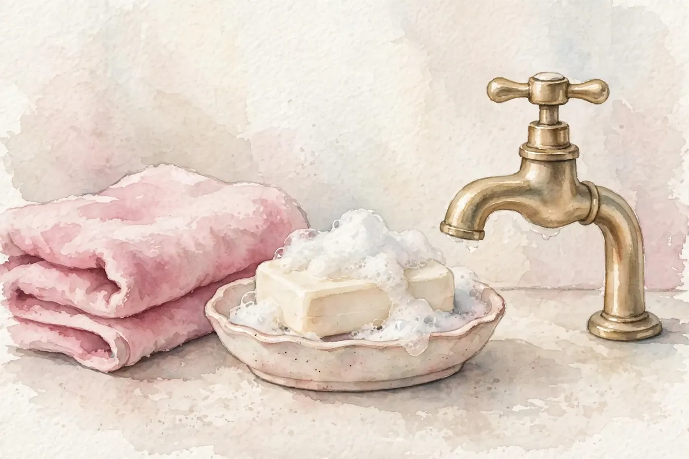
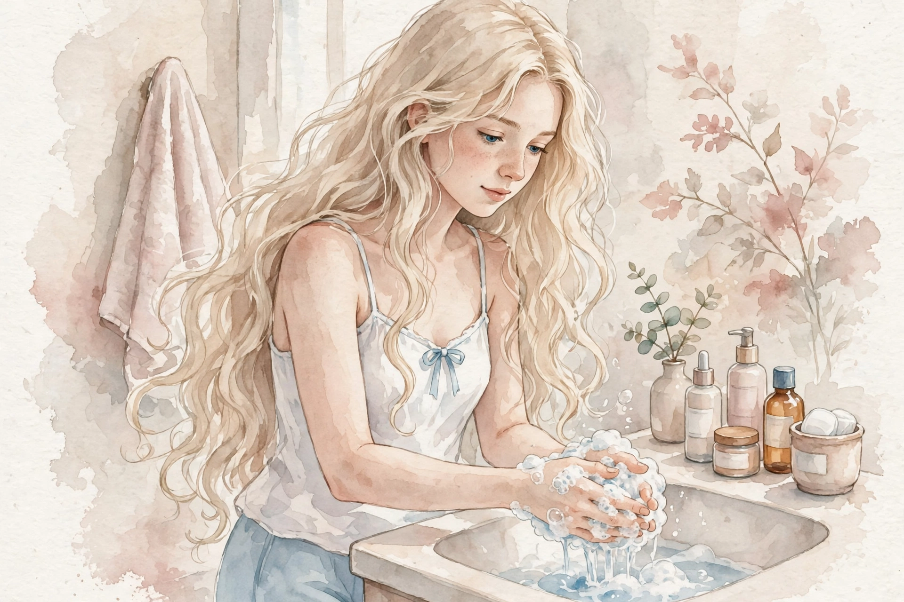

トップ ＞ スキンケア ＞ スキンケアの前に手を洗う：衛生面の基本
スキンケアの前に手を洗う：衛生面の基本

スキンケアの最初の手順は、実は化粧水ではありません。手を洗うことです。施術では、お客様の肌に触れる前の手洗いが絶対の前提であり、この習慣は自宅のケアでもまったく同じです。この記事では、手洗いをケアの一部として組み込む考え方を整理します。
手は「運び屋」である
1日の生活の中で、手はドアノブ、スマートフォン、財布、電車のつり革など、数え切れないものに触れます。その手で容器を開け、中身を取り、顔に触れる。手の清潔さは、そのままケアの清潔さにつながります。帰宅後や、料理のあと、ペットに触れたあとは、とくに意識したい場面です。
爪の間や指の付け根は、汚れが残りやすい場所です。施術者の手洗いでは、手のひらだけでなく、手の甲、指の間、爪まわりまでを順番に洗います。家庭のケア前でも、この順番を軽くなぞるだけで、洗い残しは大きく減ります。
洗い方と、乾かし方
石けんを泡立てて、手全体を洗います。時間の目安は、泡を全体に行き渡らせるのに必要な分で十分です。大切なのは時間より、まんべんなく洗うことです。すすぎは泡が残らないように行い、清潔なタオルで押さえるように乾かします。
手が濡れたまま容器を持つと、滑って落とす原因にもなります。乾かすところまでを手洗いの手順としてください。また、ハンドケアのクリームを塗った直後は、手の表面に油分がある状態です。スキンケアの前に塗る場合は、順番を入れ替えるか、塗ったあとに手を洗う流れにしておくと、顔に触れる手の状態が一定になります。
容器の清潔もセットで考える
手を清潔にしても、容器の口まわりに中身の残りが付いたままでは台無しです。ポンプの口、チューブの先、ジャーの縁は、使うたびに軽く拭う習慣を持つと清潔を保てます。ジャーから指で直接取るタイプは、スパチュラを使う方法もあり、道具を清潔に保つ手間と合わせて検討してください。
手洗いは、地味ですが最も確実な衛生の基本です。ケアの効果以前に、土台として整えておく価値があります。
手を洗ったあとのケアの順番も決めておく
手洗いのあと、手の乾燥が気になる方は多いと思います。スキンケアの前にハンドクリームを塗ると、手の油分が顔に触れることになります。順番としては、顔のケアを終えたあとに手のケアをする、という流れにしておくと、それぞれの役割が混ざりません。施術の現場でも、手の保湿は施術の合間や終了後に行うのが基本です。
石けんの選び方も、手の状態に関係します。洗浄力の強いものと穏やかなものでは、洗ったあとの手の感触が違います。1日に何度も洗う方は、その違いが積み重なります。自分の洗う回数に合ったものを選ぶ視点も、手洗いという基本の一部です。
手洗いの習慣は、家族と共有したい基本でもあります。子どもがスキンケアや日焼け止めを使う年齢になったら、「塗る前に手を洗う」を最初の約束にすると、衛生の感覚が育ちます。約束は、理由とセットで伝えると残ります。手は運び屋だから、きれいにしてから触る。この一言で十分です。
外出先でケアをする場面では、水で洗えないこともあります。その場合は、清潔なシートで手を拭うなどの応急で代用し、帰宅後にあらためて洗う流れにします。基本が身についていれば、応急の判断もぶれません。基本とは、例外の場面でこそ効いてくるものです。
手を洗う場所の環境も、習慣の続きやすさに関係します。洗面所に石けんが常備されているか、タオルが清潔な場所にあるか。環境が整っていれば、手洗いは意識しなくても回ります。石けんの置き場所が定まっていない家庭は、まずそこから整えてみてください。
手洗いのあとの手の水分は、よく拭き取ることも大切です。濡れた手で容器を持つと滑りますし、水滴が容器の中に入る心配もあります。乾かすまでが手洗い、という意識を、手順の言葉として持っておきましょう。
衛生の基本は、誰にでもできることの積み重ねです。特別な道具も、難しい技術も要りません。だからこそ、毎日続ける価値があります。

セラフィナ「ケアの最初は、手を洗うところからだね。土台がいちばん大事だよ」

セラフィナ｜美容の道具箱の案内役
「量と表示が分かれば、美容は失敗しない。」——セラフィナと白猫のモコが、買う前のチェックポイントを案内します。綺麗になりたい気持ちに正直に、でも表示は冷静に読むのが、このサイトの約束です。